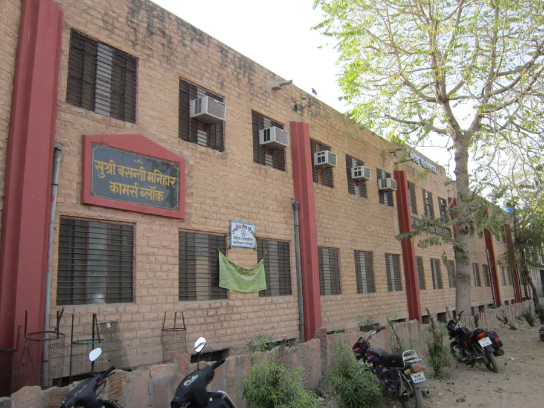
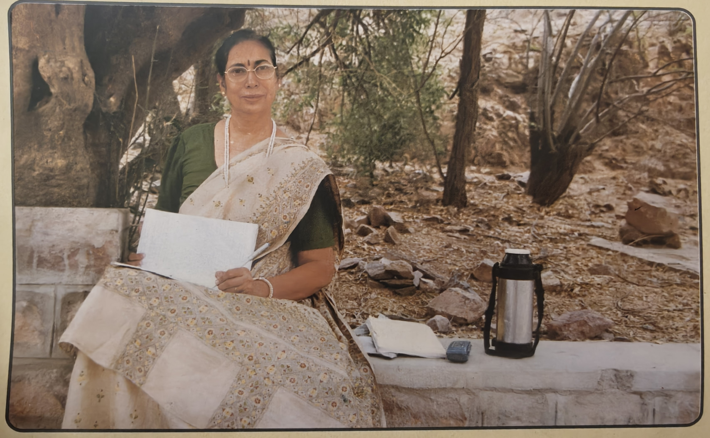
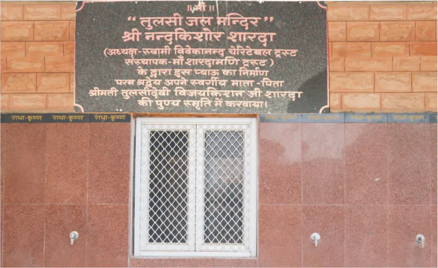
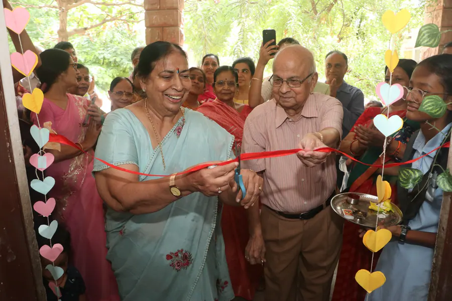
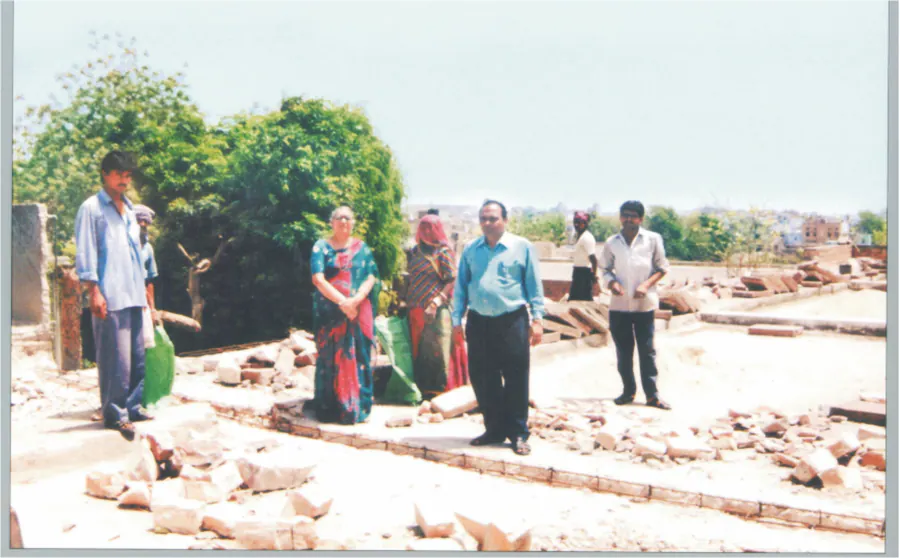
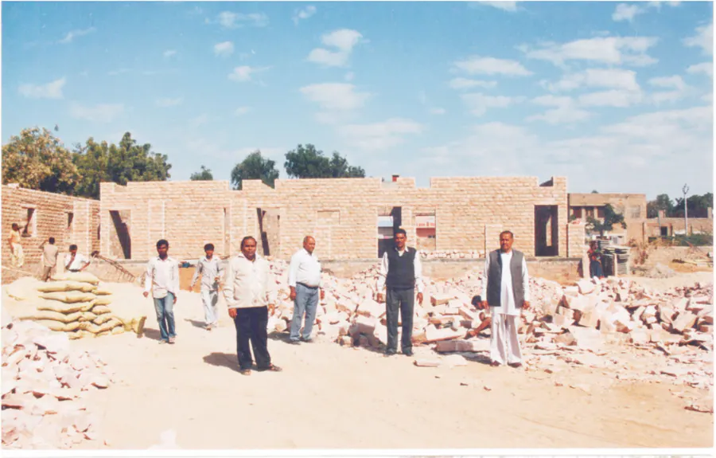

01 · स्थान
कक्ष-कक्ष और ब्लॉक
अतिरिक्त कक्षाओं, स्वागत कक्ष और कॉमर्स ब्लॉक जैसे निर्माणों ने विद्यार्थियों को पढ़ने और संस्थानों को व्यवस्थित रूप से चलने के लिए स्थान दिया।
भैया श्री नन्दकिशोर जी शारदा द्वारा प्रदत्त अमूल्य ज्ञान, चिंतन और दस्तावेजों को प्रकाशित कर जन-जन तक पहुँचाने की पावन धारा। यह मिशन ज्ञान के प्रसार के साथ शिक्षा-संस्थानों के विकास में भी सक्रिय सहयोग करता है।

भैया जी के चैतन्यस्वरुप होने के पश्चात् माँ बसन्ती जी एवं मधु माँ द्वारा इस मिशन की स्थापना सद्साहित्य प्रकाशन एवं निःशुल्क वितरण हेतु की गई। इसका मुख्य उद्देश्य भैया प्रदत्त अमूल्य ज्ञान, चिंतन, व्यक्तिगत डायरी जैसे दस्तावेजों और आध्यात्मिक मार्गदर्शन को प्रकाशित कर उसका प्रचार-प्रसार करना है।
यह कार्य केवल पुस्तकों के प्रकाशन तक सीमित नहीं है। इसके माध्यम से वर्तमान और भावी पीढ़ी को उचित दिशा मिले, देश-विदेश में दिव्य ज्ञान का प्रसार हो और नए युग की चेतना आगे बढ़े, यही इस मिशन की मूल भावना है।
मिशन द्वारा भैया जी के दिव्य ज्ञान, जीवन-वृत्त, हस्तलिखित डायरी, माँ बसन्ती जी के व्यक्तित्व और मणिद्वीप की आध्यात्मिक धारा से जुड़े ग्रंथों का प्रकाशन किया गया है। इन पुस्तकों का उद्देश्य पाठक में श्रद्धा, विवेक, आत्मचिंतन और जीवन की आध्यात्मिक दिशा को जागृत करना है।
पुस्तकों की लंबी सूची को यहाँ दोहराने के बजाय सभी प्रकाशनों को एक अलग पृष्ठ पर व्यवस्थित रखा गया है, ताकि पाठक आवरण, विषय और उपलब्धता को एक ही स्थान पर देख सकें।

ज्ञान गंगा मिशन केवल ज्ञान के प्रसार तक सीमित नहीं रहा। ट्रस्ट से प्रेरित होकर ट्रस्टियों और जनसहयोग के माध्यम से विभिन्न शैक्षणिक संस्थानों में निर्माण और सहयोग कार्य सम्पन्न हुए, ताकि विद्यार्थियों को शिक्षा के लिए बेहतर, सुरक्षित और उपयोगी वातावरण मिल सके।

अतिरिक्त कक्षाओं, स्वागत कक्ष और कॉमर्स ब्लॉक जैसे निर्माणों ने विद्यार्थियों को पढ़ने और संस्थानों को व्यवस्थित रूप से चलने के लिए स्थान दिया।

जल-सुविधा, प्रवेश व्यवस्था और अन्य मूलभूत निर्माण विद्यार्थियों की गरिमा, सुविधा और सुरक्षा से सीधे जुड़े हुए हैं।

शिक्षा को समयानुकूल बनाने के लिए कम्प्यूटर लैब और उपयोगी संसाधनों का सहयोग विद्यार्थियों के भविष्य से जुड़ता है।

मिशन से प्रेरित सहयोग कार्यों में महिला महाविद्यालय में ‘कुमारी बसन्ती मनिहार कॉमर्स ब्लॉक’, महालक्ष्मी गर्ल्स सीनियर सेकेंडरी स्कूल, प्रतापनगर में कक्ष-कक्षों का निर्माण, ‘श्री नन्दकिशोर शारदा स्वागत कक्ष’, मुख्य द्वार, प्याऊ और कम्प्यूटर लैब जैसे कार्य प्रमुख हैं।
इन कार्यों की भावना यही रही कि शिक्षा केवल फीस या पुस्तकों से पूर्ण नहीं होती; उसके लिए वातावरण, सुविधाएँ और संस्थागत संबल भी आवश्यक हैं।
महिला महाविद्यालय, जोधपुर में ‘कुमारी बसन्ती मनिहार कॉमर्स ब्लॉक’ के निर्माण में सहयोग।

महालक्ष्मी गर्ल्स सीनियर सेकेंडरी स्कूल, प्रतापनगर में ‘श्री नन्दकिशोर शारदा स्वागत कक्ष’ और कक्ष-कक्षों का निर्माण।
विद्यालयों में गरिमापूर्ण प्रवेश, जल-सुविधा और आवश्यक आधारभूत सुविधाओं की स्थापना।
विद्यार्थियों को आधुनिक शिक्षा-संसाधनों से जोड़ने के लिए कम्प्यूटर लैब जैसी सुविधाओं का सहयोग।
श्री नन्दकिशोर शारदा ज्ञान गंगा मिशन भैया जी के अमूल्य ज्ञान को सुरक्षित रखने, प्रकाशित करने और निःशुल्क उपलब्ध कराने के साथ-साथ शिक्षा-संस्थानों में ऐसे सहयोग को भी आगे बढ़ाता है जो विद्यार्थियों के भविष्य को गरिमा और विश्वास देता है।